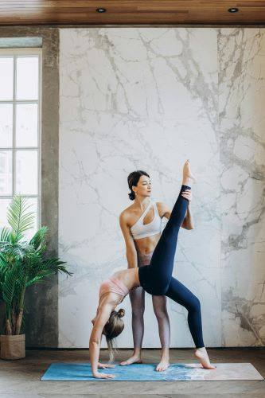

Fluid Flex: Dynamic Mobility Drill
Immerse yourself in the rhythmic flow of Fluid Flex, a dynamic mobility drill designed to enhance flexibility, joint mobility, and overall movement fluidity. This workout emphasizes continuous, controlled movements to unlock your body's range of motion and promote a sense of suppleness. Follow these instructions for a fluid and invigorating session that will leave you feeling agile and revitalized.
Warm-up (5 minutes):
Begin with a gentle warm-up to increase blood flow and prepare your joints for dynamic movement. Include exercises such as neck circles, shoulder rolls, hip circles, and dynamic arm swings.
Circuit 1 - Joint Mobilization Wave (10 minutes):
Neck and Shoulder Rolls (3 minutes):
- Initiate slow and controlled circles with your neck and shoulders, promoting flexibility and relieving tension.
Dynamic Arm Circles (3 minutes):
- Extend your arms and perform continuous circles, alternating between forward and backward motions to warm up the shoulder joints.
Hip Figure Eights (4 minutes):
- Stand with feet hip-width apart and trace figure-eight patterns with your hips, engaging the core and lubricating the hip joints.
Circuit 2 - Flowing Spinal Waves (12 minutes):
Cat-Cow Transitions (4 minutes):
- Move between the cat and cow yoga poses, flexing and extending the spine to promote flexibility and mobility.
Standing Forward Bend with Arm Sweep (4 minutes):
- From a standing position, hinge at the hips, reach for the ground, and then sweep your arms overhead in a continuous, flowing motion.
Twisting Lunges (4 minutes):
- Perform dynamic lunges with a twist, alternating sides to enhance spinal rotation and stretch the hip flexors.
Circuit 3 - Limber Leg Sequence (8 minutes):
Dynamic Leg Swings (3 minutes):
- Holding onto a stable surface for balance, swing one leg at a time forward and sideways to enhance hip mobility.
Lateral Lunges with Reach (3 minutes):
- Step laterally into lunges, reaching towards the ground on each side to stretch the inner thighs and engage the core.
Ankle Circles and Rolls (2 minutes):
- Sit or stand and rotate your ankles in circular motions, promoting ankle mobility and flexibility.
Cool Down and Stretch (5 minutes):
- Perform low-intensity cardio to gradually decrease heart rate.
- Focus on static stretches for major muscle groups, including hamstrings, quadriceps, shoulders, and back.
Conclude the workout with a gentle cooldown to relax the muscles and promote flexibility.
Light Cardio (3 minutes):
Static Stretching (2 minutes):
